Siren
Version 2.3 (1998) GUI Tour
The Siren system is a general-purpose music description and
composition system; it is a collection of about 200 Smalltalk classes for
building musical applications. The current version works on Squeak 2.3
running on Mac/Windows/SGI systems with MIDI drivers and CD-quality
stereo audio I/O. The Siren release is available on the Web.
These screen dumps were made with Siren
2.3 running on an Apple Macintosh PowerBook.
Details can be found in the on-line
Siren outline text, and in the on-line
Siren reference manual.
Outline
Display List Views
Layout Manager Examples
Time Sequence View
Pitch/Time View
Hauer-Steffens View
Function View
Sound View
MIDI Fader View
MIDI Voice Picker
Sonogram View
Display List Views
The example screens below show the simple Siren display list editor ("SqueakDraw");
it allows you to manipulate hierarchical structured graphics objects. The
pop-up menu in the left view shows the default display list controller
message. Keyboard commands and mouse interaction support zooming and scrolling.
One item is selected in each view, and can be dragged or resized using
its "selection handles."
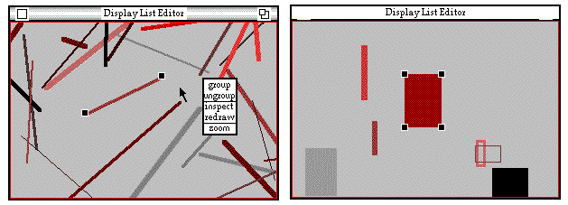
Layout Managers
Siren is based on the "Navigator MVC" model; in it various kinds of layout
managers take structured objects and create display lists. The two examples
below a show class inheritance hierarchy presented first as an indented
list and second as a simple tree. Color is used to denote class species
relationships in the class hierarchies. A refined tree layout manage could
do graphical balancing or top-down layout.
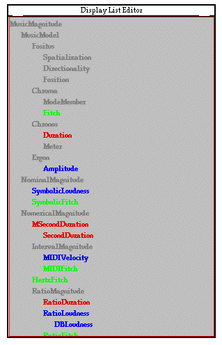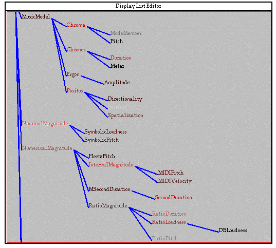
Time Sequence View
A time sequence view is a display list view that whose layout manager interprets
time as running from left to right. In the example below, the note "head"
is used to display the event's voice; this is a steady rhythm of 4 voices.
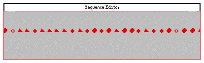
Pitch/Time View
In a pitch/time view, time runs left-to-right, and pitch is displayed from
bottom-to-top. In the example below, the layout manager creates a separate
sub-display-list for each note, adding lines to the note head image to
show its amplitude (vertical in red) and duration (horizontal in blue).
The example shows alto, tenor, and bass lines.
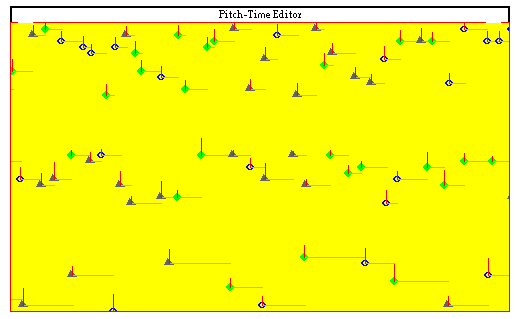
Hauer-Steffens Notation
Hauer-Steffens view is related to piano-roll notation; the lines are placed
corresponding to the accidentals or the black notes on the keyboard. The
note display is done as in the pitch/time view above.
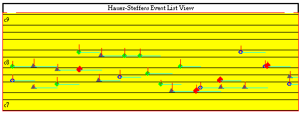
Function View
The multi-function view allows the viewing and editing of up to 4 functions
of 1 variable. The example shows linear break-point functions in red and
yellow, an exponential segment function in blue, and a cubic spline function
in green. The buttons along the left are for selecting a particular function
for editing or file I/O.
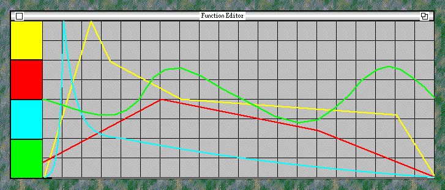
Sound View
The Siren sound view lets you zoom/scroll over stored sound object, and
to create new sounds based on file I/O or simple synthesis algorithms.
The figure below shows a frequency sweep and the editor's pop-up menu.
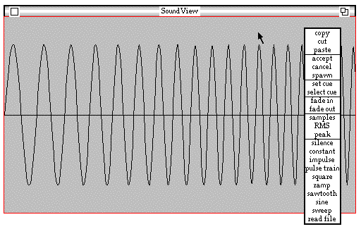
MIDI Faders
The MIDI fader view shows the real-time state of an arbitrary set of MIDI
faders or control inputs.
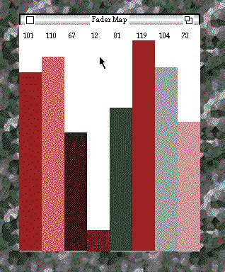
MIDI Voice Picker
The MIDI voice picker is used in creating orchestras of general MIDI instruments.
Pressing a button in this view auditions the selected general MIDI sound.
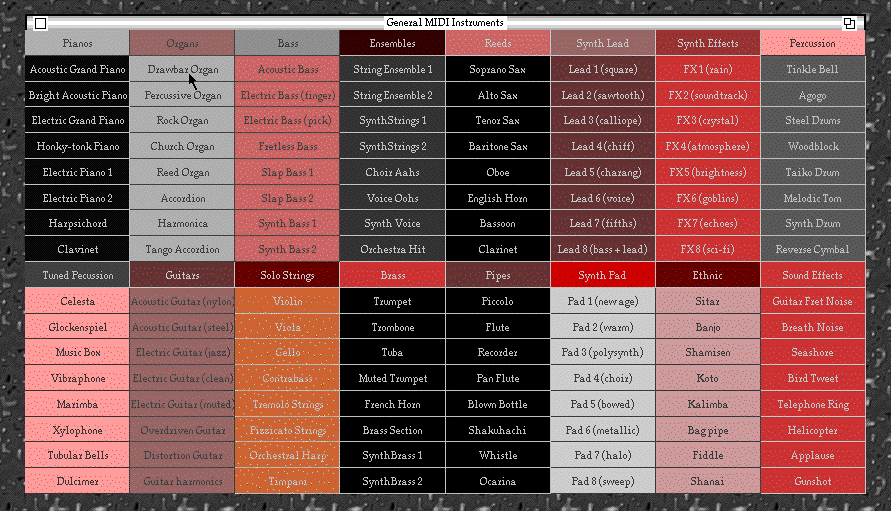
Sonogram View
The sonogram view displays an fft-derived spectrum. In the example below
shows a swept sine wave.
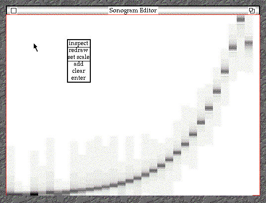
Stephen Travis Pope -- stp@create.ucsb.edu -- LastEditDate: 1998.11.12